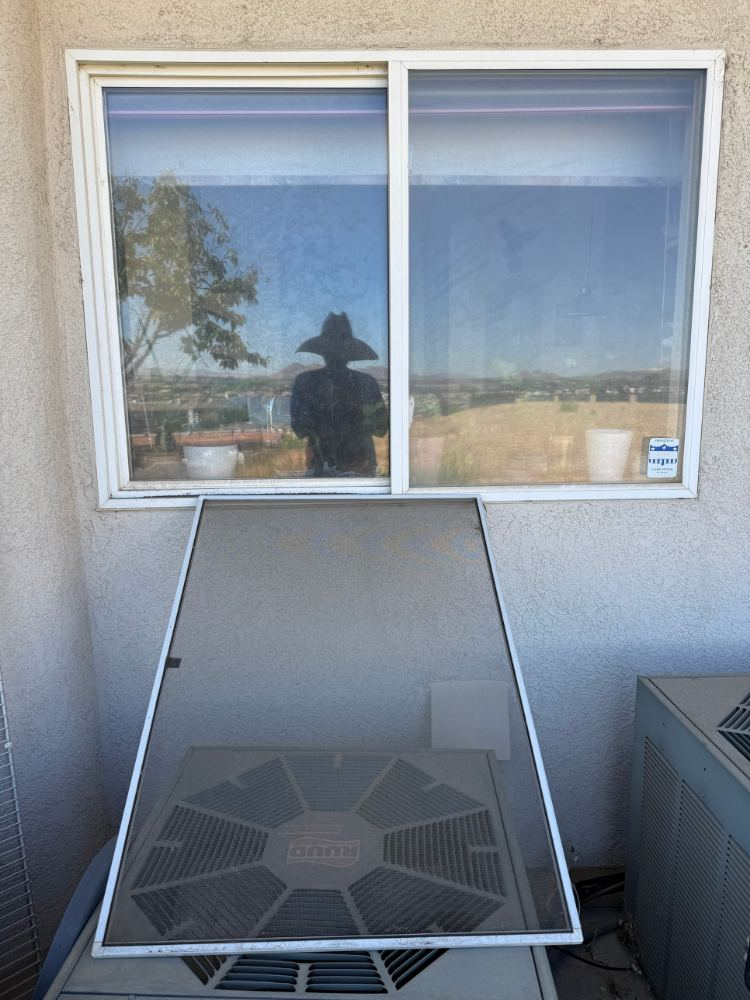

Window Screen Replacement Cost: New Mesh or a New Frame?
Most torn window screens need new mesh, not a new frame. If the frame is straight and the corners are solid, we re-mesh it from $53.99 a screen in charcoal fiberglass, or $64.99 in our heavier all-weather mesh. A frame that's bent, twisted, cracked at the corners or missing needs a new custom frame, from $84.99 with all-weather mesh. When screens are the only service on the visit, there's a $149 minimum.

The two minute check: mesh or frame?
Take the screen out and lay it flat on the driveway.
- Does it lie flat? If one corner lifts, the frame is twisted. Once a frame twists it never sits right again.
- Are the corners solid? Press each one. Cracked or loose corners mean a new frame.
- Is each side straight? Sight down the edges. A bow or kink from a gust or a foot means a new frame.
- Are the clips or springs there? Missing hardware can often be replaced; we check it with the frame.
- Is the spline channel intact? That groove holds the new mesh. If it's crushed, the mesh won't hold.
All five fine: you need new mesh. Any one of the first three failed: you need a new frame. Missing screen: new frame. Most screens we see qualify for re-meshing.
What re-meshing includes and costs
We strip the old mesh, clean and check the frame, then fit new mesh with fresh spline at an even tension and check the fit before the screen goes back in.
- Standard Re-Mesh, charcoal fiberglass: from $53.99 a screen.
- All-Weather Upgrade, vinyl-coated polyester: from $64.99 a screen. It's heavier and pet-resistant (not pet-proof), and its denser weave gives more shade with a little less view and airflow.
What a new frame includes and costs
A new aluminum frame is made to fit the measured opening, with the clips or springs your window takes, and it goes in the way the builder's did. Full Upgrade, a new custom frame with all-weather mesh, starts at $84.99 a screen. Oversize screens and custom work are quoted after we see them.
Most houses are a mix
We decide screen by screen at the window, not from the driveway. A house with 14 screens might need 11 re-meshed and 3 rebuilt, and that's how it shows on the quote. At our starting prices that example works out to about $849 (11 x $53.99 + 3 x $84.99), before any oversize or custom work. It's a calculation, not a quote for your home.
The $149 minimum and the two visits
When screens are the only service, the visit has a $149 minimum and discounts don't lower it. If screens are added to a window cleaning, they're priced in that quote instead. Screen-only work takes two visits: first pickup and inspection, then a confirmed return to install. Both dates are requests until Tony confirms them.
Can you re-screen it yourself?
Yes, if the frame passes the check above. A spline roller, new spline and a roll of mesh will do it, and plenty of homeowners re-screen one or two themselves. The hard parts are even tension and clean corners; too tight bows the frame, too loose flaps in the wind. It stops being worth it when there are many screens, when frames are twisted or missing, or when the window needs a custom size.
Why screens wear out faster up here
Builder mesh gets most of the year in hard sun, then wind that runs 30 to 50 miles an hour a few times each season. The mesh goes brittle first, a gust bows it out of the spline, and the frame twists. That's why the frame check comes first: heavier mesh can't fix a bent frame or a poor fit.
What you may not need
- A new frame for a screen that passes the check. Re-meshing is the right call more often than not.
- All-weather mesh on a shaded north window. Keep fiberglass there and save the $11 a screen.
Count your screens, note any that are bent or missing, and request a pickup on our window screen replacement page. For torn mesh on good frames, see window screen repair, and compare materials on our all-weather mesh page.